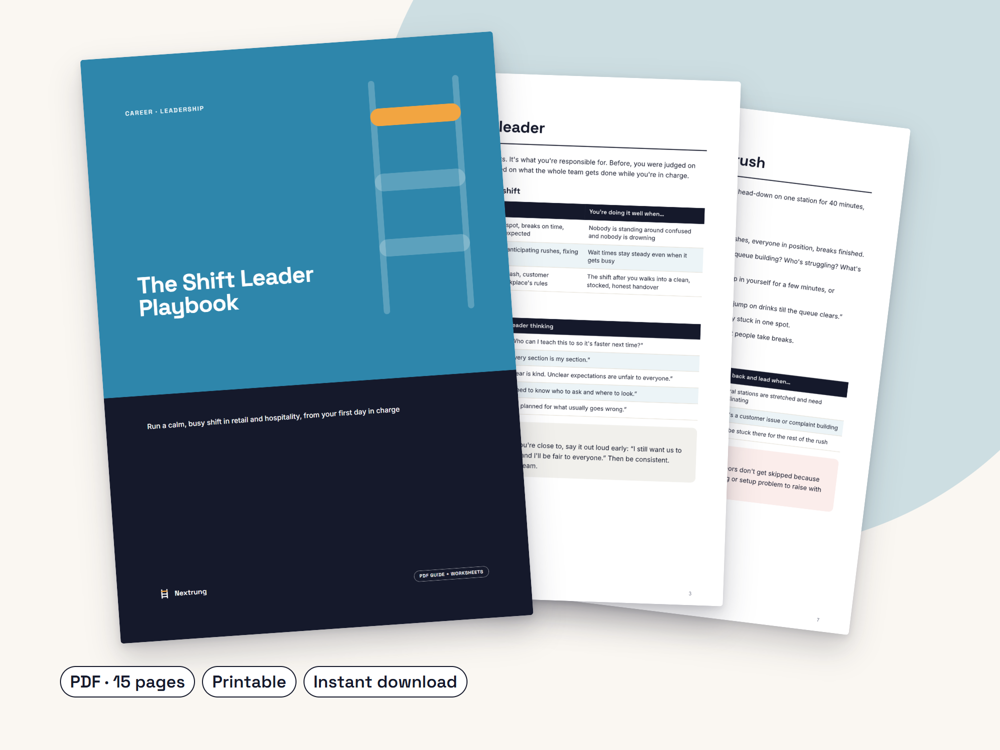

The Shift Leader Playbook
Run a calm, busy shift in retail and hospitality, from your first day in charge
Made for: New and aspiring shift leaders, supervisors and team leaders in retail, fast food, cafes and hospitality.
What's inside
- Your three jobs on every shift (people, flow, standards) and the crew-to-leader mindset shift
- A 30/60/90-day plan for new shift leaders, plus the questions to ask your manager in week one
- The 10-minute pre-shift plan with a printable positioning sheet
- The 60-second huddle formula: Hi, Where, Focus, Win
- A rush routine and a “jump in or lead?” guide
- Delegation formula and feedback scripts (Situation, Behaviour, Impact)
- Scripts for lateness, conflict, angry customers and low effort, plus when to escalate
- Handover checklist, shift reflection, hard-conversation planner and weekly team check-in
- Instant PDF download, A4
Look inside


You got promoted because you were good at the job. Now you're running the floor, deciding breaks, fixing rushes and leading people who were your workmates last week, usually with no leadership training at all.
The Shift Leader Playbook is a practical guide for the real floor in fast food, cafes, restaurants and retail. Every chapter ends in something you can use on your next shift: a checklist, a script or a worksheet.
Written by a working shift leader, in plain language. General guidance that works alongside your own workplace's policies and procedures.
Questions
Is this specific to one company?
No. It's general guidance for any retail, fast food, cafe or hospitality workplace and isn't affiliated with any employer. Always follow your own workplace's policies.
I haven't been promoted yet. Is it useful?
Yes. It works well as preparation for a shift leader or supervisor role, and can help you show their manager they're ready.
Is this HR or legal advice?
No. For pay, breaks and workplace rights in Australia, check the Fair Work Ombudsman or speak with your manager or HR.
How do I get it?
Instant PDF download after purchase. The worksheets are printable.
Please note: This playbook is general guidance on leadership and workplace communication. It is not legal, HR or industrial-relations advice. Always follow your employer's policies and procedures, your award or agreement, and work health and safety laws. For questions about pay, breaks or workplace rights in Australia, check the Fair Work Ombudsman (fairwork.gov.au) or speak with your manager or HR. This guide was drafted with the help of AI writing tools, then edited and designed by Nextrung.